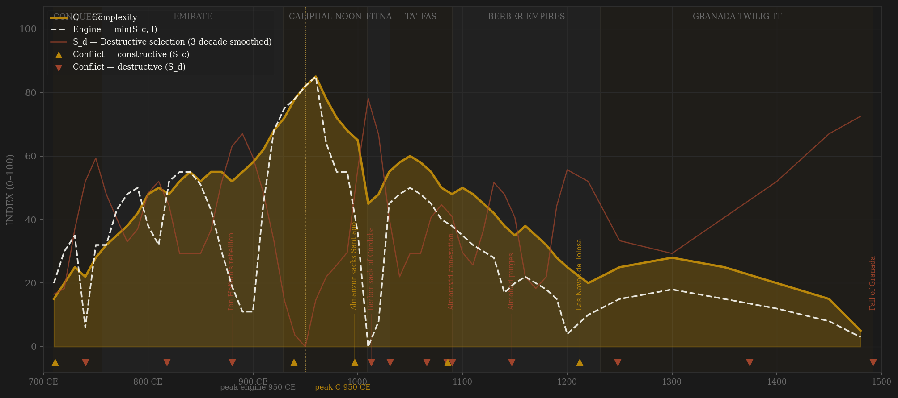
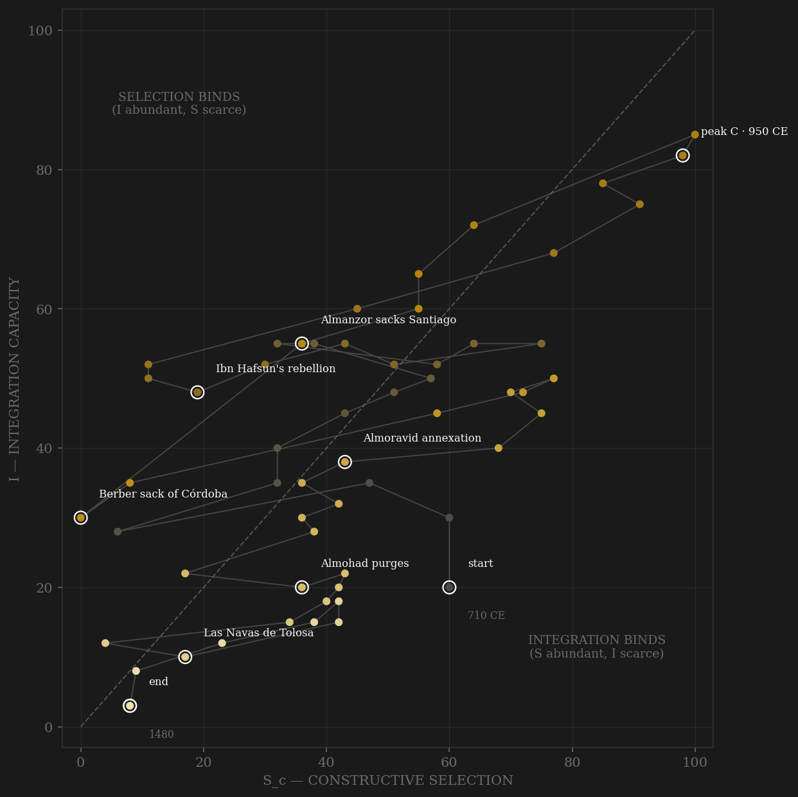

Al-Andalus is the sample's cleanest head-to-head between the two definitions of selection, because its greatest soldier and its greatest court are different regimes. The elite-entry channel is the incorporation arc: conquest by treaty (Theodemir keeping his lands in 713), the Maliki qadi-scholar ladder that survives every dynasty, and then the ninth-century closure — muwallad converts shut out of an Arab apex until the excluded career ran through rebellion, which is what Ibn Hafsun's forty-year war from Bobastro was. Abd al-Rahman III's answer was reincorporation by design: rebels pardoned into service, and a deliberately mixed elite — Arab, Berber, saqlabi, muwallad, Jew, Mozarab — with Hasdai ibn Shaprut's career as its exhibit. That court peaks under al-Hakam II in the 950s–960s, and complexity peaks with it: engine and C on the same decade, SIMULTANEOUS under v2. The external-war definition instead crowns Almanzor — fifty-plus razzias, Barcelona 985, Santiago 997 — an engine peak in the 980s, AFTER peak complexity: lag −30, FAIL. That inversion is the amendment's argument in one polity: the razzia machine was maximal combat and minimal contestability — a dictatorship that sequestered the caliph, decapitated court politics, and imported the Berber regiments that would sack Córdoba in 1013. The fitna that follows is the caliphate's suicide, coded decade by decade; and then the strangest stretch in the sample — the ta'ifa decoupling, where twenty competing courts RAISE court-level contestability (Samuel ibn Naghrela, a Jewish polymath, vizier and general of Granada) while integration collapses beneath them. The Berber empires close the ladder twice over; Granada is a two-century rump with one bright chancery generation; and the arc ends with a civil war fought inside a siege.

The trajectory enters far right of the diagonal — a conquest society, all contest and no coordination — and takes two full centuries to climb, sawtoothing through the Berber revolt, the Rabad, and the muwallad secessions before the caliphal ascent drives it up the integration axis to the 960s apex. It crosses into balance only at the very top, and the stay is short: the Amirid decades drag it sideways (contest privatized, integration still coasting), and the fitna then cuts it down both axes at once — the steepest two-decade drop in the sample, the phase-portrait signature of an internal army turned on the capital. What follows is the diagnostic stretch: the ta'ifa decades bounce the path BACK up the selection axis while integration keeps falling — competition without coordination, glitter without a state — before the Almoravid and Almohad closures walk it down into the corner. Granada is a long low shelf hugging the origin, integration pinned near the floor for two and a half centuries while residual contest flickers. The path dies where it was born, bottom-right of the diagonal: Al-Andalus began and ended selection-rich and integration-starved, and the one generation it held both is the one that built the library.
Coded by locus and target, never by outcome — and this ledger carries two of the rule's hardest calls. The Berber sack of Córdoba in 1013 is S_d although the army was nominally the state's own instrument: an internal force turned on the capital is the definition of violence against coordination machinery. The Almoravid annexation of 1090–94 is S_d despite external origin, and the locus reasoning is spelled out: what the Lamtuna dismantled was not a frontier but the ta'ifa courts themselves — the civilization's own political machinery, its kings deported in chains — core replacement, not peer rivalry. Las Navas in 1212 stays in channel B by the same logic run the other way: a frontier field battle, lost by an army in the field; the machinery collapse it triggered codes in the rows that follow, not in the battle itself — locus, never outcome. And the 1066 Granada pogrom is the incorporation bargain broken by mob and pulpit: the vizier lynched, the community massacred — S_d aimed precisely at the mixed-elite machinery that channel A measures.
| YEAR | CONFLICT | CODE | CODING RATIONALE |
|---|---|---|---|
| 711 CE | Guadalete | Sc | The conquest opens — external contest founding the polity; incorporation by treaty follows the sword (Theodemir 713) |
| 740 CE | Berber revolt | Sd | The settler army rises against exclusion from land and spoils — the peninsula's first great internal war, aimed at the distribution machinery itself |
| 818 CE | Rabad revolt | Sd | Córdoba's own suburb rises against the emir; crushed, razed, thousands exiled to Fez and Crete — the state's army against the capital's own people |
| 880 CE | Ibn Hafsun's rebellion | Sd | The big one — forty years from Bobastro (880–928), rallying muwallad exclusion: the failed ladder embodied, secession across the south |
| 939 CE | Simancas | Sc | The caliph's army beaten in the FIELD by León — frontier discipline, machinery intact; the frontier reorganized after |
| 997 CE | Almanzor sacks Santiago | Sc | The razzia machine at maximum — external locus, so channel B — but victory without peer pushback disciplines nothing internal: this is the v1 engine peak, and the amendment's cautionary exhibit |
| 1013 | Berber sack of Córdoba | Sd | The fitna's centerpiece — the capital destroyed by the state's own imported army: internal locus regardless of the soldiers' origin; Madinat al-Zahra already wrecked 1010 |
| 1031 | Abolition of the caliphate | Sd | The merry-go-round ends — Hishām III deposed by Córdoba's own notables; the coordination apex voted out of existence after 22 years of coups |
| 1066 | Granada pogrom | Sd | Joseph ibn Naghrela lynched, the community massacred — the incorporation bargain broken by mob and pulpit: violence aimed at the mixed-elite machinery channel A measures |
| 1085 | Toledo falls | Sd | The meseta's pivot city lost to Alfonso VI — core loss by locus, the interior opened (annotation carried by the Almoravid row; separate ledger entry) |
| 1086 | Zallaqa | Sc | The invited Almoravids break Alfonso in the field — a frontier victory with a borrowed army; the borrowing is the next row's story |
| 1090 | Almoravid annexation | Sd | External-origin but CORE-REPLACING: the Lamtuna dismantle the ta'ifa courts one by one 1090–94 — the civilization's own political machinery, its kings deported in chains (al-Mu'tamid to Aghmat). Locus = the polity's own coordination apparatus, so S_d despite foreign origin |
| 1147 | Almohad purges | Sd | The Almohad conquest: forced conversions, the dhimmi bargain abolished, Maimonides' family in flight 1148 — the incorporation machine burned down by doctrine (name kept short — phase-portrait label collides with the 710 start marker otherwise) |
| 1212 | Las Navas de Tolosa | Sc | The break — but a frontier FIELD battle by locus: the coalition destroys the Almohad army in open country; the machinery collapse it triggers codes in the following rows, not in the battle. Locus, never outcome |
| 1248 | Seville falls | Sd | The cascade's end — Córdoba 1236, Valencia 1238, Seville 1248: the heartland cities lost inside three decades, Granada helping the besieger as vassal |
| 1374 | Ibn al-Khatib strangled | Sd | The great vizier executed at Fez on charges procured from Granada — the state garroting its own chancery: the Yue Fei precedent |
| 1492 | Fall of Granada | Sd | Terminal — and internally poisoned: Boabdil against his father against al-Zagal, a civil war fought inside the siege; surrender in January, the Alhambra Decree by March |
| COMPONENT | GRADE | BASIS |
|---|---|---|
| S_c A — Elite-entry (0.40) | ○ scholar-coded | The incorporation arc: treaty incorporation (Theodemir 713), Umayyad client core, Maliki qadi/scholar ladder, saqaliba palace careers, muwallad exclusion → Ibn Hafsun, Abd al-Rahman III's deliberately mixed elite (Hasdai ibn Shaprut), Amirid clientage narrowing, ta'ifa court competition, Almoravid/Almohad Berber-hierarchy closure, Nasrid chancery (madrasa 1349, Ibn al-Khatib). Coded per row from Kennedy, Muslim Spain and Portugal (1996) and Fletcher, Moorish Spain (1992); chapter-level cites in the ledger |
| S_c B — External rivalry (0.30 cap) | ○ scholar-coded | Conquest expansion, Frankish frontier (Roncesvalles, Barcelona 801), the 10th-c. Fatimid caliphal contest (fades with their departure for Egypt 969–73), Reconquista pressure while the frontier held (Simancas 939, Zallaqa 1086, Alarcos 1195, Las Navas 1212), Almanzor's razzias, Granada's siege frontier. This channel alone = the frozen Sc_v1_combat column — and its 980s peak on the razzia decade is the combat-contamination exhibit |
| S_c C — Internal within-rules (0.30) | ○ scholar-coded | Shura/vizierate politics, Córdoban ulama-court bargaining (the Maliki fuqaha as licensed opposition — even the Martyrs crisis 850–59 processed through qadi courts), ta'ifa diplomacy, Nasrid chancery politics. Near-zero under the Amirid dictatorship (caliph sequestered) and under Almoravid/Almohad doctrinal rule |
| S_d — Destructive | ○ scholar-coded | Locus-and-target ledger: Berber revolt 740–43, Rabad 818, muwallad revolts (Ibn Hafsun 880–928), Amirid coup 978, the fitna 1009–1031 coded decade-by-decade (Sanchuelo → sack of Córdoba 1013 → abolition 1031), Granada pogrom 1066, Almoravid annexation 1090–94 (core-replacing, locus reasoned), Almohad purges, post-Las-Navas cascade, Nasrid coup carousel, Ibn al-Khatib 1374, the terminal civil war inside the siege 1482–92. Per-row rationale in coding_ledger_v2.csv |
| I — Integration | ○ scholar-coded | Inherited composite column (convivencia index, translation output, trade networks, dhimmi-system functionality — Glick, Menocal, Constable) — preserved untouched from the original build. Convivencia is a contested construct (Fernández-Morera critique acknowledged in SOURCES.md); scores follow the Glick/Menocal consensus |
| C — Complexity | ○ scholar-coded | Inherited column: scientific output, urbanization (Chandler's Córdoba ~500K, debated but widely cited), library holdings (the 400K-volume figure is from medieval Arabic sources — order of magnitude only), agricultural innovation (Watson). Preserved untouched |
| E — Entropy / R — Population | ○ scholar-coded | Inherited columns; R is Muslim Iberian population in millions (McEvedy & Jones), ~4M → ~8.5M (950–1000) → ~0.5M (1480). E from fragmentation counts, persecution events (Wasserstein, Fierro, Catlos) |
57 rows, 710–1480 (decadal to 1200, then irregular: 1220, 1250, 1300, 1350, 1400, 1450, 1480 — post-1200 ledger rows code each row's apparent coverage window per its own notes; the inherited grid was matched, never re-dated). Sc/Sd decomposition built STRAIGHT to definition v2 (0.40 elite-entry / 0.30 external hard cap / 0.30 internal within-rules) by scripts/build_andalus_sicre.py, 2026-07-06; per-row channel scores and chapter-level citations in data/raw/andalus/coding_ledger_v2.csv; all pre-existing columns preserved untouched. BOTH DEFINITIONS REPORTED per the v2 amendment, and here they invert: v2 contestability lag +0 (engine 950 = C 950, SIMULTANEOUS); v1 external-war-only lag −30 (engine 980 → C 950, FAIL) — the v1 engine peak lands on Almanzor's razzia decade, maximal combat under a dictatorship that had sequestered the caliph and decapitated court politics: the combat-contamination case the amendment was written against, inverted from Song (there v1 rewarded being invaded; here it rewards invading). POLITY-LUMPING SENSITIVITY, flagged for the roster decision: Al-Andalus spans five regimes (Umayyad emirate/caliphate → ta'ifas → Almoravid → Almohad → Granada), and the dynasty-split rule arguably applies. Umayyad-only span (711–1031): v2 +0 SIMULTANEOUS, v1 −30 FAIL — identical to the full-span result, because both engine peaks and peak C all land inside the Umayyad era; the headline is insensitive to the split, but a split roster would score the later regimes as separate (mostly sub-viability) rows. The ta'ifa decades are coded as an explicit A-vs-I decoupling (court-level contestability rising while integration collapses) — visible in the phase portrait's post-fitna bounce. Standing caveat for ○ scholar-coded polities: SIMULTANEOUS verdicts cluster in this evidence tier (gupta, achaemenid, sasanian, carolingian, andalus) — possible halo effect, the same historiography feeding both S and C; headline stats reported all-polities AND thick-evidence-only. Frozen protocol throughout: 3-decade centered rolling mean, engine = min(S_c, I). Rebuild: build_andalus_sicre.py, then polity_report.py --slug andalus.